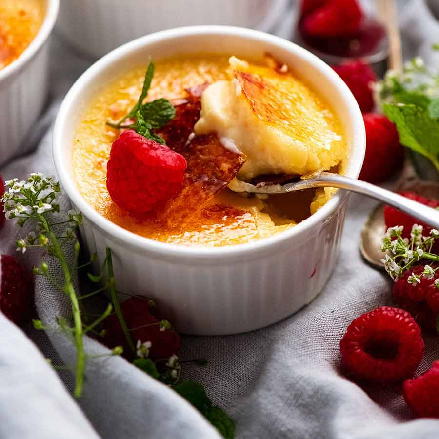

Bulgogi là một món thịt nướng nổi tiếng của Hàn Quốc. Nó bao gồm thịt bò mềm, thái mỏng được ướp với một hỗn hợp gia vị bao gồm tỏi, hành, đường, nước tương và dầu mè. Thịt sau đó được nướng trên lửa than hoặc lửa than hoá.
Bibimbap
Bibimbap là một món ăn truyền thống Hàn Quốc có nghĩa là "cơm trộn". Nó bao gồm một tô cơm trắng được trộn chung với các loại rau, thịt, trứng và nước mắm đặc biệt. Bibimbap thường được trang trí đẹp mắt và có hương vị đa dạng, từ cay đến ngọt.
Kimbap
Kimbap là một món ăn giống như sushi cuốn từ cơm và các thành phần khác như thịt, rau, trứng, cá, củ quả và một chút mù tạt. Các thành phần được cuốn trong một lớp rong biển. Kimbap thường được cắt thành các lát tròn và là một món ăn nhẹ, dễ ăn.
Kimchi
Kimchi là một món ăn truyền thống và biểu tượng của Hàn Quốc. Đó là một loại rau củ muối lên men, chủ yếu là cải thảo, được ướp trong gia vị và các thành phần khác như tỏi, ớt, gừng và tôm khô. Kimchi có nhiều hương vị, từ chua, cay đến ngọt, và thường được ăn kèm với cơm và món khác.
Ramen
Ramen là một món mì nổi tiếng của Nhật Bản. Nó bao gồm mì sợi dày, nấu chín trong nước dùng có hương vị đậm đà, thường được làm từ xương heo, thịt gà hoặc hải sản. Ramen thường được kèm theo các loại topping như thịt heo nạc, măng tây, trứng luộc và rong biển.
Sukiyaki
Sukiyaki là một món lẩu nổi tiếng của Nhật Bản. Nó bao gồm thịt bò mỏng, nấu chín trong nước dùng có hương vị ngọt ngào, kèm theo các loại rau quả, nấm và tofu. Sukiyaki thường được ăn kèm với một chén trứng sốt để chấm.
Sushi
Sushi là một món ăn truyền thống của Nhật Bản. Nó bao gồm một miếng cơm trắng được phủ lên trên là một lát cá tươi hoặc các loại hải sản khác như tôm, cá hồi, ốc, hoặc trứng cá. Sushi thường được phục vụ cùng với nước tương, gừng đỏ và wasabi.
Tempura
Tempura là một món ăn chiên giòn có nguồn gốc từ Bồ Đào Nha nhưng đã trở thành một phần không thể thiếu trong ẩm thực Nhật Bản. Nó bao gồm các loại hải sản, rau quả hoặc thịt được chế biến bằng cách ngâm qua chất bột chiên và rán trong dầu nóng cho đến khi vàng giòn.
Risotto
Risotto là một món ăn có nguồn gốc từ miền Bắc nước Ý. Nó được làm từ gạo Arborio hoặc Carnaroli, hấp chín với nước, rượu trắng và thêm gia vị như hành tây, nấm và phô mai.
Pasta
Được làm từ bột mì và nước, pasta là một loại mì ống hoặc mì sợi. Nó thường được kết hợp với các loại sốt như bolognese, carbonara, pesto và arrabbiata.
Gelato
Gelato là một loại kem Ý truyền thống. Nó có cấu trúc mịn và độ ngọt hơn so với kem thông thường. Gelato thường có nhiều hương vị đa dạng như socola, vani, dâu tây và hạnh nhân.
Tiramisu
Tiramisu là một món tráng miệng phổ biến của Ý. Nó được làm từ bánh Savoiardi (bánh quy ladyfinger) ngâm trong cà phê, lớp kem phô mai mascarpone và được rắc bột cacao lên trên.
Lasagna
Món lasagna là một loại mì ống dày được xếp lớp với sốt bò, sốt cà chua, phô mai và các loại rau khác. Nó được nướng trong lò cho đến khi phô mai tan chảy và bề mặt hấp dẫn màu nâu.
Pizza
Món pizza là một biểu tượng của ẩm thực Ý. Nó có nền bánh mỏng được phủ đầy các loại topping như sốt cà chua, phô mai, xúc xích, thịt và rau.
Bánh mì Baguette
Bánh mì Baguette là biểu tượng của ẩm thực Pháp. Nó có vỏ giòn tan và ruột mềm, thường được sử dụng trong các bánh sandwich (bánh mì kẹp) hoặc dùng để chấm với nhiều loại món.
Steak Frites
Steak Frites là một món ăn đơn giản và ngon miệng của Pháp. Món này bao gồm một miếng thịt bò nướng chín tới mức mong muốn, thường là thịt bò lươn đơn hoặc thịt bò tươi sống, kèm theo khoai tây chiên giòn. Nó thường được ăn kèm với nước sốt và rau sống.

Crème Brûlée
Crème Brûlée là một món tráng miệng phổ biến trong ẩm thực Pháp. Đây là một loại kem trứng mềm và mịn, thường có hương vị vani, được phủ một lớp đường caramel ở trên cùng. Khi thưởng thức, lớp đường caramel sẽ được phá vỡ để tiếp cận đến kem bên trong.
Salade Niçoise
Salade Niçoise là một món salad truyền thống từ vùng Nice của Pháp. Món này gồm rau sống, cà chua, cà tím, quả trứng, cá ngừ, cây hành tây, dầu ô liu và các loại gia vị. Salade Niçoise thường được phục vụ với cá ngừ chiên và khoai tây.
Coq au Vin
Coq au Vin là một món gà hầm được nấu với rượu đỏ và rất nhiều gia vị. Món này có nguồn gốc từ nông trại và trở thành một món ăn cổ điển của Pháp. Gà được hầm chín mềm trong nước sốt đậm đà, thường được kèm với khoai tây nghiền hoặc bánh mì.
Tarte Tatin
Tarte Tatin là một loại bánh nướng có nguồn gốc từ vùng Sologne của Pháp. Bánh được làm bằng cách nướng trái cây, thường là táo, trong một lớp đường caramel dưới đáy bánh. Khi nướng, bánh được đảo ngược để tạo ra một mặt trên caramelized ngon lành.
Escargot
Escargot là từ tiếng Pháp để chỉ ốc sên. Món ăn này thường được chế biến bằng cách nướng ốc sên trong vỏ kèm theo gia vị như bơ tỏi, hẹ, hoặc phô mai. Escargot có hương vị đặc biệt và là một món ăn pháp truyền thống được yêu thích trong các bữa tiệc hoặc nhà hàng sang trọng.
Quiche Lorraine
Quiche Lorraine là một món ăn nổi tiếng từ vùng Lorraine của Pháp. Đây là một loại bánh quiche có nhân từ trứng, kem, thịt xông khói và phô mai. Quiche Lorraine có vỏ bánh giòn và nhân mềm ngọt, là một món ăn phổ biến trong bữa sáng hoặc bữa trưa.
Croissant
Croissant là một loại bánh ngọt có hình dạng cong như vòng cung mặt trăng. Bánh được làm từ lớp bột mỡ xốp nhẹ, có vị ngọt và hương thơm đặc trưng. Croissant thường được thưởng thức vào bữa sáng, và là một biểu tượng không thể thiếu trong ẩm thực Pháp.
Thời gian khuyến mãi Giảm 50% khi đặt bàn trực tuyến!

.png)
.png)
.png)
.png)


 Trang Chủ
Trang Chủ Món ăn
Món ăn Đặt bàn
Đặt bàn Vị Trí
Vị Trí Đầu bếp
Đầu bếp Thông tin
Thông tin